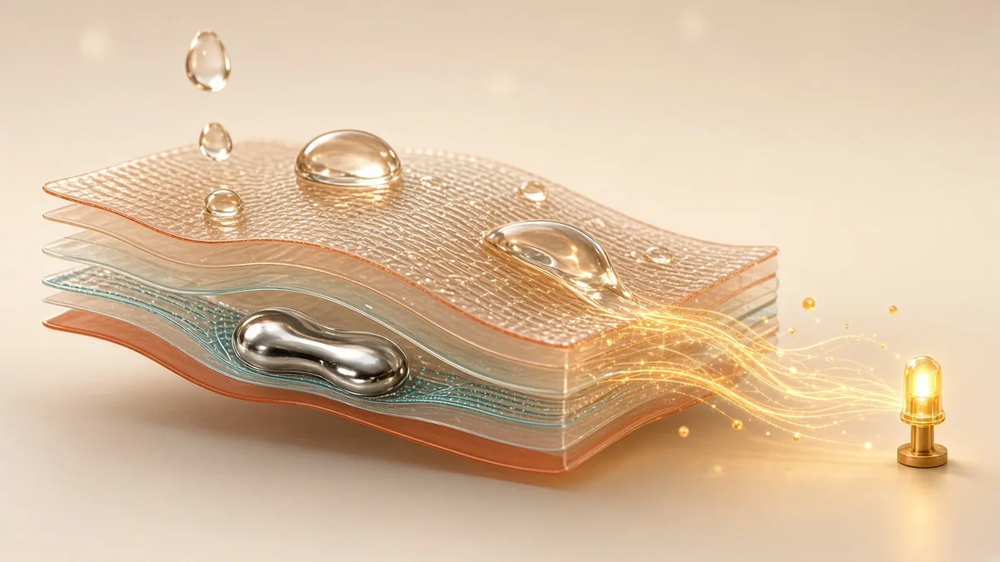

Pillar 01
Self-Powered
Energy-harvesting materials & device design
We design materials and devices that generate their own electricity from motion, water and moisture — so that flexible electronics can run without batteries.
- Triboelectric nanogenerators (TENGs) and the physics of contact electrification
- Liquid–solid, droplet and hydrovoltaic energy harvesting
- Liquid-metal and nanofiber stretchable conductors and electrodes
- Self-powered bioelectronic patches and dressings for health care
Representative work
- Density-of-States Matching-Induced Ultrahigh Current Density and High-Humidity Resistance in a Simply Structured Triboelectric Nanogenerator Advanced Materials (2023)
- An All-Fabric Droplet-Based Energy Harvester with Topology Optimization Advanced Energy Materials (2022)
- A Kirigami-Driven Stretchable Paper-Based Hydrovoltaic Electricity Generator Advanced Functional Materials (2025)
- Permeable Liquid Metal-Based Fibrous Patch with Dual-Bond Interconnects for Reliable Sensing and Closed-Loop Wound Care ACS Nano (2026)